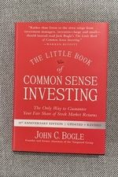

Library › Money & Finance
The Little Book of Common Sense Investing — Summary & Key Lessons

The only way to guarantee your fair share of stock market returns — from the man who invented the index fund.
📖 OPEN THE FULL INTERACTIVE BREAKDOWN →🌐 Read it in Hindi, Hinglish, Gujarati, Tamil & 22 more languages — free, with audio.
💡 The Big Idea
Bogle — founder of Vanguard, inventor of the retail index fund — spends the book proving one arithmetic truth: all investors collectively EARN the market's return, so after costs, the average actively-managed rupee MUST underperform the average indexed rupee (this isn't opinion; it's subtraction — the 'Cost Matters Hypothesis'). The evidence is brutal: most active funds trail their benchmark over any long period; the few winners rarely repeat (past performance genuinely predicts nothing); fund costs — expense ratios, turnover, loads, taxes — compound AGAINST you exactly as returns compound for you (2% annual costs consume roughly two-thirds of a lifetime's potential wealth); and investors do even worse than their own funds by chasing performance (buying after hot streaks, selling after crashes). The prescription is almost insultingly simple: buy a broad low-cost index fund, add regularly, ignore forecasts, never chase, hold forever — 'the miracle of compounding returns without the tyranny of compounding costs.' Speculation on entertainment budgets only; investment on autopilot. Time in beats timing, and boring wins by default because everyone exciting is charging you for the excitement.
🧠 The 6 Key Lessons
Lesson 1: The Relentless Arithmetic: Why Average Beats Almost Everyone
Chapters 1-4
Before costs, investing is a zero-sum game around the market return: for every rupee that beats it, another trails it. AFTER costs, it's negative-sum — fees, spreads, turnover taxes are subtracted from the pot every year regardless of results. So the index fund's 'settling for average' is a trick of language: earning the market return at near-zero cost mathematically finishes ahead of most cost-burdened attempts to beat it — not sometimes, but structurally, increasingly, and forever. Bogle's demonstrations: over decades, the S&P index beat the overwhelming majority of surviving active funds (and the graveyard of closed funds makes reality worse than the stats); the handful of long-run winners were unidentifiable in advance and mostly stopped winning after discovery.
📖 Example: Buffett's famous bet — offered publicly in 2007, echoing Bogle's book: $1M that an S&P 500 index fund would beat any collection of hedge funds over 10 years, after fees. One professional accepted, selecting five funds-of-funds (elite managers, maximum… Read the full example →
⚡ Do this: Pull your investments' true annual cost (expense ratios + any advisory fees + fund turnover drag). If the blended number exceeds ~0.5%, calculate what it costs over 30 years with a compounding calculator — then move new contributions to a broad low-cost index fund this month.
Lesson 2: The Tyranny of Compounding Costs
Chapters 5-8
Compounding's magic has an evil twin: costs compound too. Bogle's centerpiece example: 7% market return over 50 years turns $10,000 into ~$294,600 — but at 2% annual costs (5% net), the same money grows to only ~$114,700: the investor supplied 100% of the capital, took 100% of the risk, and received under 40% of the reward; the industry took the rest for shuffling paper. Every cost layer repeats the theft: sales loads, 12b-1 style fees, advisory wrap fees, and the hidden one — TURNOVER (each trade pays spreads and triggers taxes; active funds churning 100% yearly leak 1%+ invisibly). Hence Bogle's iron rule: since returns are unknowable and costs are contractual, minimize the ONLY variable you control. 'You get what you don't pay for' isn't a slogan; it's the entire business model of the index fund — and the reason the industry spent decades mocking it.
📖 Example: Bogle's croupier analogy, his favorite: investing's casino — the more you play (trade, switch funds, hire helpers), the richer the croupiers (brokers, managers, marketers) and the poorer the players collectively, by exactly the croupiers' take. The fund… Read the full example →
⚡ Do this: Run the two-line audit: (1) your total invested amount × your total cost percentage = the industry's annual salary from you; (2) that salary × 30 years compounded = the retirement it's taking. Then set every future SIP/contribution to the lowest-cost broad index option available and stop feeding the croupiers.
Lesson 3: Stay the Course: The Investor Is the Last Risk
Chapters 9-18
Even index investors fail when behavior leaks in: performance-chasing (fund investors' actual returns trail their own funds' reported returns by huge margins because money arrives AFTER hot streaks and flees AFTER crashes), timing (missing a handful of best days destroys decades of compounding — and the best days cluster next to the worst), and complexity creep (sector funds, themes, 'smart' variants — each a re-invitation to speculation with an index costume). Bogle's discipline: pick a sensible allocation (a simple stock/bond split by age and stomach), automate contributions, rebalance rarely, ignore ALL forecasts (including his), and let time carry the weight — 'time is your friend; impulse is your enemy.' The endgame perspective: the market's long-run return is built from business fundamentals (earnings + dividends), while speculation just moves returns between holders; own the businesses, skip the game of guessing the guessers. The final chapter's counsel stands for the whole book: 'stay the course' — four words that outperform four thousand strategies.
📖 Example: The behavior-gap evidence Bogle marshals: during the dot-com era, money flooded into tech funds at the 2000 peak and out at the 2002 bottom — fund returns were bad, INVESTOR returns catastrophic; the same film replayed in 2008-09 (record outflows at the… Read the full example →
⚡ Do this: Automate everything decidable in advance: monthly auto-investment into your index allocation, one annual rebalancing date on the calendar, and a written one-page policy ('I do nothing in crashes; I continue buying'). When markets panic, read the page instead of the news.
Lesson 4: Asset Allocation and the Telltale Chart: Building the Whole Portfolio
Chapters 16-20: The Complete Picture
Index funds answer the WHAT; allocation answers the HOW MUCH — and Bogle keeps it deliberately boring: your stock/bond split is the only big decision, driven by your ability, willingness, and NEED to take risk (his classic starting point: roughly your age in bonds, adjusted for temperament and goals — a 30-year-old at 70/30, a retiree nearer 40/60), because bonds aren't for returns, they're for BEHAVIOR: the ballast that keeps you invested through the crash you're statistically guaranteed to meet several times. His warnings for the modern menu: most ETF innovation is 'a trading vehicle wearing an index costume' (sector funds, leveraged products, thematic baskets — indexes designed to be churned, reintroducing every cost and behavior the original index fund existed to kill); international is optional in moderation, not obligatory; and the TELLTALE CHART — Bogle's analytical signature — shows that every 'new paradigm' fund strategy, plotted against the index over decades, reverts: outperformance streaks are borrowings from future underperformance, repaid with interest. The final synthesis is almost spiritual in its restraint: pick your allocation once with honesty about your stomach, own the whole market at minimum cost, rebalance rarely, and let five decades of compounding do what no cleverness has ever reliably done.
📖 Example: Bogle's telltale-chart demolition of the 'new era' funds: plotting the celebrated strategies of each decade (Nifty Fifty growth funds, 80s sector stars, 90s tech funds, 2000s commodity vehicles) as a RATIO against the plain index — every line rising… Read the full example →
⚡ Do this: Set your allocation in writing using the age-in-bonds starting point, adjusted one honest notch for your actual crash behavior (did you sell in the last panic?). Consolidate into the fewest, cheapest total-market funds that implement it. Then calendar ONE rebalancing day per year — and give every shiny new fund idea the telltale test: 'would this line beat the index AFTER costs, for thirty years? Has anything like it, ever?'
Lesson 5: The Winners' Game: How to Stop Losing in the Market
Part 2: The Strategy
Bogle's metaphor borrowed from tennis: professionals win by hitting winners, but amateurs lose by hitting errors — and most investors are amateurs trying to play a professional game. In the market, the 'winners' (beating the index after costs) are so rare and unpredictable that the sensible strategy is the amateur's: don't try to win — just avoid losing. That means accepting the market's return (via index funds) instead of chasing outperformance. Bogle's arithmetic is unassailable: all investors collectively ARE the market, so before costs, half will underperform — and after costs, most will. The 'winners' game for individuals is the game of not making the errors: no stock-picking, no timing, no panic-selling. The market's return, captured cheaply, beats most professionals' returns after costs — and that's the whole strategy.
📖 Example: Bogle points to the decades of data showing that the majority of actively managed funds underperform their index over 10+ years — not because the managers are stupid, but because costs, taxes and human error eat the difference. The index investor wins by not… Read the full example →
⚡ Do this: Calculate the expense ratio of every fund you own. For any fund above ~0.5%, ask yourself honestly: 'What evidence do I have that this fund will beat the index after costs?' — and consider switching to an index fund this quarter.
Lesson 6: The Magic of Compounding: Time in the Market, Not Timing the Market
Part 3: The Discipline
Bogle's most repeated sermon: compounding is the eighth wonder of the world, and its only requirement is time — which is why the single biggest investing mistake is interrupting the compounding (selling in a downturn, switching strategies, missing years). The math is staggering over decades: small monthly investments compounded at market returns dwarf everything else, but only if never interrupted. The practical corollary: don't try to time the market — the data shows that being fully invested, even through crashes, beats the timing geniuses, because the best days cluster unpredictably and missing them wrecks returns. The investor's real skill is not brilliance; it's the boring discipline of staying invested, staying diversified, and letting decades do the work.
📖 Example: Bogle calculates how an investor who stayed fully invested through every crash outperformed the one who 'wisely' sat in cash during downturns — because the recovery days, unpredictable and violent, did more for the portfolio than any avoidance. The… Read the full example →
⚡ Do this: Write down your investment time horizon and commit to one rule: 'I will not sell based on market news for the next 12 months.' Set up automatic monthly investing if you haven't — the automation is the discipline.
✅ 5-Step Action Plan
- Buy the haystack: broad, low-cost index funds as the portfolio core.
- Audit and minimize total costs — the only lever you fully control.
- Automate contributions; make impulse structurally impossible.
- Never chase last year's winner — reversion is the industry's oldest joke.
- Write your stay-the-course policy now, for the crash that's always coming.
⚠️ When This Doesn't Work
Bogle's 'buy the index, ignore the noise' is the most proven advice in finance — and Paytm's IPO is the reminder that the noise is still seductive: India's most famous retail-frenzy listing, where lakhs of investors abandoned index discipline to chase a 'decacorn' story, and the stock fell 60% within a year. Index investing wins over decades precisely because it refuses the lure of the single big story. The book is right; the hard part is being right while everyone around you is getting rich on paper.
💀 The Graveyard Proves It
📲 Paytm's IPO — India's Biggest IPO Fell 75% — Priced for a Story, Not a Business. Burn: ₹1.5 lakh crore of investor value at trough. Read the full case study →
💬 Best Quotes from The Little Book of Common Sense Investing
- “Don't look for the needle in the haystack. Just buy the haystack.”
- “In investing, you get what you don't pay for.”
- “The stock market is a giant distraction from the business of investing.”
Interactive version: mark lessons as read, listen in your language, share quote cards.